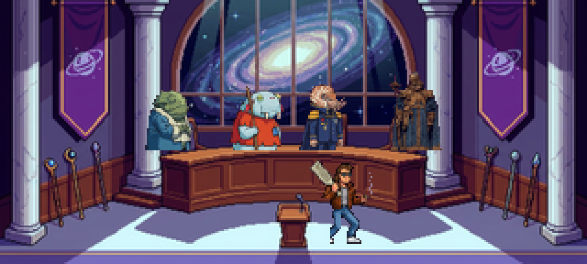
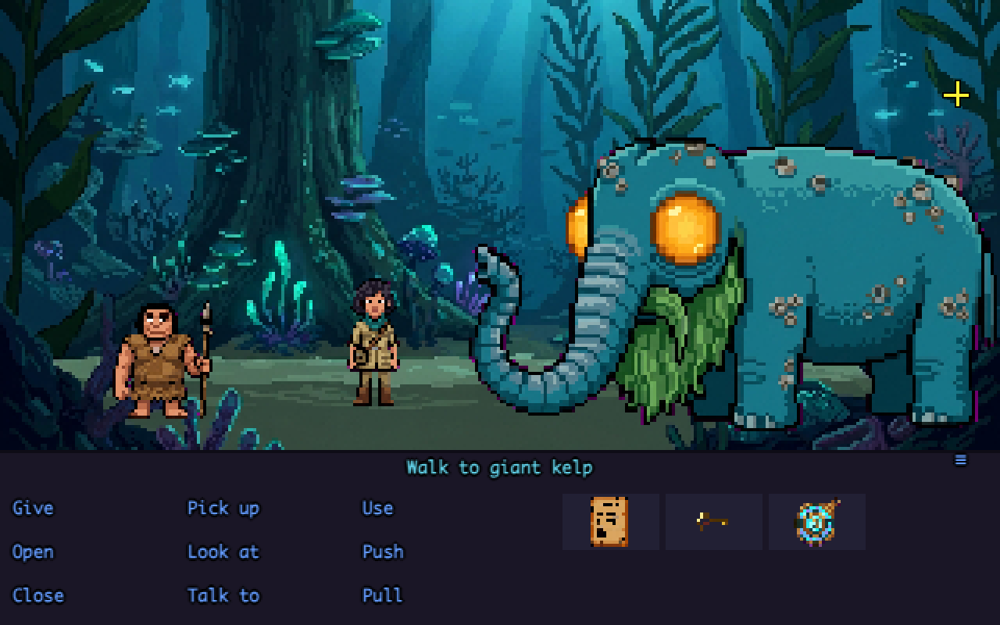
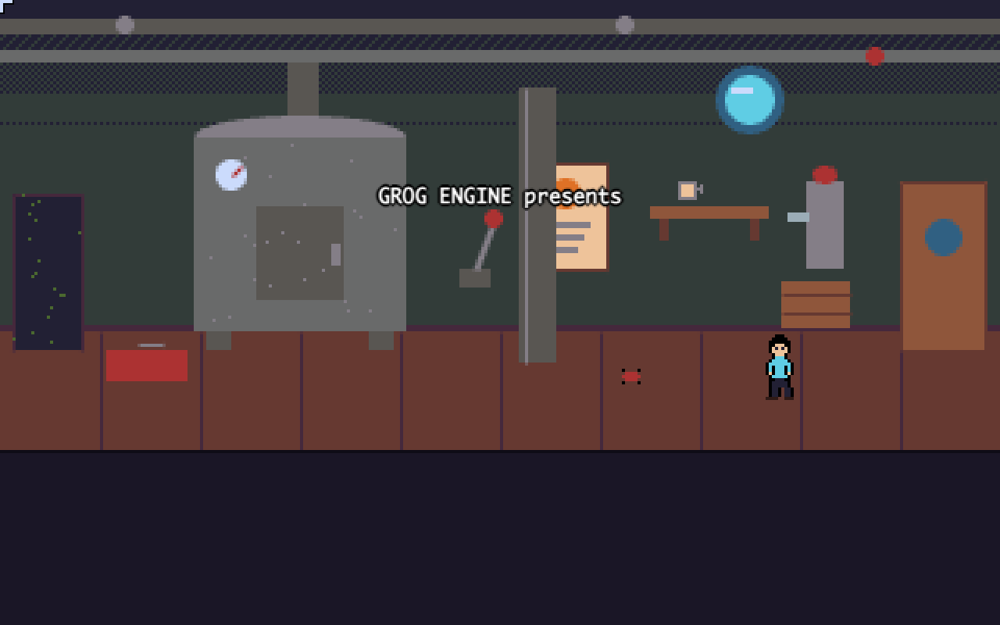
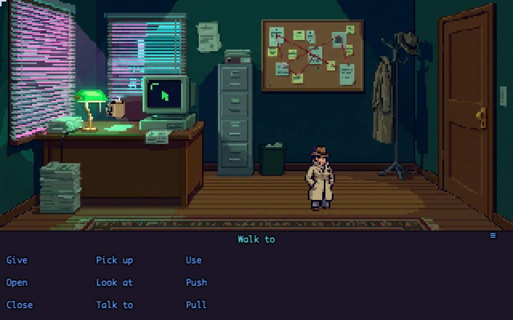

A modern platform for classic point-and-click adventures.
Four playable demos — no install, they run right here in your browser.

Dr. Chip Marlow discovers the cure for The Beige — a plague turning whole planets beige, boring and slightly damp — in an afternoon. Getting the Intergalactic Council to approve it is the game: queues, circular form dependencies, a notary frog, a strategy consultant, and the one department that actually works.

Professor Tharma has slept for three days, smiling, unwakeable. Work a real evidence chain, descend into a prehistoric submarine jungle, and interview the only witnesses. Every piece of art AI-generated and imported through the Studio's asset pipeline.

QA tester Deb Ugger files bug #1337 ("game engine eats QA tester") and is promptly eaten by the game engine. Insult sword-fighting, a tenured Invisible Wall, and a legally distinct purple tentacle. Exercises every engine feature.

Rae Tracer, P.I. takes the case of a screen with one dead pixel. A one-room noir mystery whose office, trench-coat detective and coffee mug were AI-generated, chroma-keyed and sheet-sliced entirely through the Studio pipeline.
Open Grog Studio — the browser-based authoring tool: room editor, sprite editor, action scripting, dialog trees, chiptune music, one-click playtest and export. Start blank or load a demo and poke at it.
Every demo above is one self-contained .html file exported from Studio — save the page and it still runs from a double-click, offline.